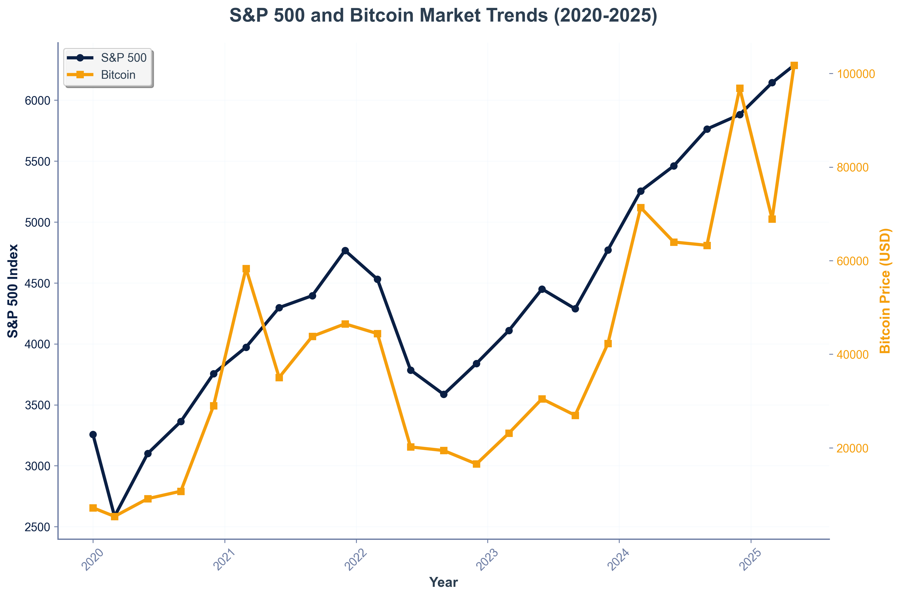

Economy & Policy
Macroeconomic Landscape
The U.S. macroeconomic picture in late March 2026 is one of slower inflation, still-restrictive interest rates, a labor market that is easing rather than collapsing, and continued pressure on household budgets from housing, insurance, and debt-service costs. Consumer prices rose 2.8% over the 12 months ending February 2026 (BLS, 2026-03-12), while the PCE price index rose 2.5% over the 12 months ending January 2026, and core PCE rose 2.6% (BEA, 2026-02-27). That is a clear improvement from 2.9% CPI inflation in December 2024 (BLS, 2025-01-15) and 6.5% in December 2022 (BLS, 2023-01-12), but the cumulative rise in prices over the last several years still means many households feel poorer even as inflation rates normalize.
Inflation is no longer being driven broadly by goods in the way it was earlier in the cycle; it is now more concentrated in shelter and labor-intensive services. In the latest CPI detail, shelter rose 4.3% year over year, food rose 2.1%, energy fell 0.2%, and services less energy services rose 4.1% in February 2026 (BLS, 2026-03-12). The practical effect is that necessities with recurring monthly bills, especially rent, owners' equivalent rent, insurance, medical services, and interest-sensitive expenses, continue to erode purchasing power even though headline inflation is much lower than in 2022. Real earnings have improved, but not enough to erase the level shock already embedded in household budgets, as real average hourly earnings increased 1.2% over the 12 months ending February 2026 (BLS, 2026-03-12).
Federal Reserve policy remains restrictive, even after rate cuts in late 2025. The FOMC kept the target range for the federal funds rate at 4.25% to 4.50% on March 19, 2026 (Federal Reserve, 2026-03-19), compared with the 5.25% to 5.50% range in place through much of 2024 (Federal Reserve, 2024-07-31). The Fed's March statement said uncertainty around the outlook has increased and repeated that future decisions will depend on incoming data, labor conditions, and inflation progress rather than any preset easing schedule. In the most recent Summary of Economic Projections available before the March meeting, the median participant projected the federal funds rate at 3.9% at year-end 2026 (Federal Reserve, 2025-12-10), which implies room for additional cuts if disinflation continues, but not a return to the near-zero-rate environment households became used to before 2022.
The labor market is cooling gradually. The unemployment rate was 4.1% in February 2026 (BLS, 2026-03-07), up from 3.9% in February 2025 (BLS, 2025-03-07) and 3.6% in February 2024 (BLS, 2024-03-08). Labor demand has normalized as well, with 7.7 million job openings on the last business day of January 2026 (BLS, 2026-03-11), down from 8.9 million in January 2025 (BLS, 2025-03-11) and 10.8 million in January 2023 (BLS, 2023-03-08). Wage growth is still positive, with average hourly earnings up 4.1% year over year in February 2026 (BLS, 2026-03-07), which is above current headline inflation, but hiring has become more selective.
Sector trends show a labor market that is rotating rather than breaking. Health care added 52,000 jobs, government added 21,000, and social assistance added 11,000 in February 2026, while temporary help services lost 12,300 jobs (BLS, 2026-03-07). That mix suggests strength in essential and publicly funded services, and weakness in more cyclical or early-cycle hiring channels. On AI-related displacement risk, the strongest current signal is slower hiring for routine clerical, support, and administrative work rather than broad economy-wide layoffs. That direction is consistent with employer survey evidence, including the World Economic Forum finding that 41% of employers expect to reduce workforces where AI can automate tasks by 2030 (WEF, 2025) and the OECD finding that workers in more AI-exposed occupations report greater task change and training needs (OECD, 2025).
Housing remains one of the clearest pressure points for households. The average 30-year fixed mortgage rate was 6.67% for the week ending March 19, 2026 (Freddie Mac, 2026-03-19), versus 6.74% in March 2025 (Freddie Mac, 2025-03-20) and 6.87% in March 2024 (Freddie Mac, 2024-03-21). Rates are somewhat below recent highs, but affordability remains poor because home prices have continued to rise. The S&P CoreLogic Case-Shiller U.S. National Home Price NSA Index increased 4.1% year over year in December 2025 (S&P Dow Jones Indices, 2026-02-24). Rental pressure has cooled from the 2022 surge but remains elevated in level terms, with the national median asking rent at $1,694 in February 2026, up 0.4% from a year earlier (Realtor.com, 2026-03-20). For households, this means both buying and renting are still expensive, and the lock-in effect from older low-rate mortgages continues to limit supply turnover.
Equity markets are still benefiting from AI-related optimism, but leadership remains narrow. The S&P 500 closed at 5,776.65 on March 24, 2026 (S&P Dow Jones Indices, 2026-03-24) and the Nasdaq Composite closed at 18,182.62 on March 24, 2026 (Nasdaq, 2026-03-24). Concentration risk remains high, as the top 10 companies accounted for 37.3% of S&P 500 market capitalization at year-end 2025 (S&P Dow Jones Indices, 2026-01-12). Valuations are also elevated, with the S&P 500 forward P/E ratio at 21.4 on March 21, 2026, above its 5-year average of 19.9 and 10-year average of 18.3 (Yardeni Research, 2026-03-21). For individuals, this means index strength may mask weaker breadth underneath and may leave portfolios more exposed to a small cluster of AI and tech mega-caps than they realize. These observations are not financial advice but provide a framework for discussion.
Consumer behavior shows resilience, but also rising strain. Real personal consumption expenditures increased 0.3% in January 2026 (BEA, 2026-02-27), showing that spending is still growing. At the same time, the personal saving rate was 4.1% in January 2026 (BEA, 2026-02-27), which is not recessionary by itself but leaves less cushion than many households had earlier in the cycle. Credit stress is rising at the margin, with the share of credit card balances transitioning into serious delinquency reaching 7.18% in Q4 2025 (Federal Reserve Bank of New York, 2026-02-13). Sentiment has improved from the lows of 2022, but it is still not especially strong, as the University of Michigan Index of Consumer Sentiment was 73.6 in March 2026 (University of Michigan, 2026-03-14) and The Conference Board Consumer Confidence Index was 101.3 in February 2026 (The Conference Board, 2026-02-25).
Recession indicators are mixed rather than uniformly negative. The yield curve has largely moved out of deep inversion, with the 10-year minus 2-year Treasury spread at 0.18 percentage point on March 24, 2026 (Federal Reserve Bank of St. Louis, 2026-03-24), compared with the much deeper inversion seen during 2023 and 2024. Leading indicators are still soft, as The Conference Board's Leading Economic Index fell 0.2% in January 2026 and was down 1.0% over the prior six months (The Conference Board, 2026-02-20). Growth has slowed but stayed positive, with real GDP increasing at a 2.3% annual rate in the fourth quarter of 2025 (BEA, 2026-02-27) after 2.8% growth for full-year 2024 (BEA, 2025-01-30) and 2.9% growth for full-year 2023 (BEA, 2024-02-28). The most plausible near-term base case is continued slower expansion, not a confirmed recession, but households should still prepare for volatility because labor demand, credit quality, housing affordability, and equity valuations all remain sensitive to any inflation or policy surprise.

Major index and asset performance over recent years
Geopolitical & Market Risks
The most immediate geopolitical market risk is not a single headline shock, but the interaction of energy chokepoints, currency-funded leverage, tariff escalation, sanctions spillovers, and fragile liquidity. Brent spot prices were $73.63 per barrel and WTI spot prices were $69.16 on March 24, 2026 (U.S. EIA, 2026-03-24), levels that look manageable by 2022 standards, but the IEA said in its March 2026 Oil Market Report that non-OPEC+ supply growth is outpacing demand growth, leaving the market balanced only if disruptions remain limited (IEA, 2026-03-13). That is why households and businesses should focus less on today's oil quote and more on what could suddenly tighten supply, especially shipping disruption, sanctions enforcement, or escalation around major transit routes.
Oil and energy
Oil prices are currently contained, but the cushion is political as much as geological. OPEC+ agreed on December 5, 2024 to extend production adjustments through the end of 2026, while incorporating the UAE's higher baseline from April 2025 (OPEC, 2024-12-05). That means spare capacity still exists, but it is being deliberately managed rather than fully released to market. At the same time, the U.S. Energy Information Administration projected in its March 2026 Short-Term Energy Outlook that Brent crude would average $74 per barrel in 2026, while warning that geopolitical events could materially alter the forecast (U.S. EIA, 2026-03-10).
Supply disruption risk remains concentrated in a few corridors. The IMF estimated in March 2024 that Red Sea shipping disruptions had sharply increased freight costs and rerouting times, with inflation effects arriving with a lag (IMF, 2024-03-28), and that channel still matters because maritime insurance, container rates, and fuel costs can rise even when benchmark crude is stable. For consumers, the pass-through is uneven: the U.S. CPI energy index rose 0.2% year over year in February 2026, while electricity rose 2.5% and piped utility gas service fell 6.0% (BLS, 2026-03-12). In practice, that means an oil shock would not only affect gasoline, but also freight, airline tickets, food logistics, and utility bills over time.
Yen carry trade and BOJ normalization
The yen carry trade remains one of the clearest hidden channels through which a currency move could become a broader market event. The Bank of Japan ended negative interest rates and yield curve control in March 2024 (Bank of Japan, 2024-03-19), and raised its policy rate to around 0.25% on July 31, 2024 (Bank of Japan, 2024-07-31). The mid-2024 episode showed how quickly yen appreciation can pressure leveraged positions when investors have borrowed cheaply in yen to buy higher-yielding global assets.
The interest-rate gap is still large, but it is narrower than it was before Japan started normalizing policy. The Federal Reserve kept the federal funds target range at 4.25% to 4.50% on March 19, 2026 (Federal Reserve, 2026-03-19), while the BOJ's policy rate remains around 0.50% after its January 2025 increase (Bank of Japan, 2025-01-24). If U.S. rates fall further while Japan continues gradual tightening, the economics of borrowing in yen to finance risk assets become less attractive. That matters because the BIS warned in its 2024 Annual Economic Report that leveraged trades can amplify volatility when funding conditions shift abruptly (BIS, 2024-06-30). A forced unwind would most likely hit highly valued equities, credit spreads, and some emerging-market assets first. These observations are not financial advice but provide a framework for discussion.
Trade wars and tariffs
Trade-war risk is no longer hypothetical, because major tariff schedules are already in force and some rates rise further in 2026. The Office of the U.S. Trade Representative finalized Section 301 tariff increases on September 13, 2024, including 100% tariffs on Chinese electric vehicles, 50% on semiconductors, and 25% on steel, aluminum, lithium-ion EV batteries, and several other categories, with staggered implementation through 2026 (USTR, 2024-09-13). The European Commission imposed definitive countervailing duties on battery electric vehicle imports from China in October 2024 (European Commission, 2024-10-29), showing that this is now a transatlantic pattern rather than a U.S.-only policy.
The economic effect is broader than the directly targeted goods. The U.S. International Trade Commission reported in 2024 that tariff pass-through can raise domestic prices and shift sourcing patterns depending on market structure and supply elasticity (USITC, 2024). Companies can adapt by relocating production, increasing inventories, or diversifying suppliers, but those steps usually cost money. That raises the risk that goods disinflation slows or reverses even if domestic demand cools.
Sanctions and financial fragmentation
Sanctions are still tightening the global financial map, especially around Russia, dual-use exports, shipping, and payments. The U.S. Treasury's Russia sanctions program continues to target banks, energy flows, military supply chains, and sanctions evasion networks (U.S. Treasury, accessed 2026-03-25), and the Council of the European Union's sanctions timeline shows repeated expansions of restrictions on Russian banking, transport, energy, and trade through 2025 and 2026 (Council of the EU, accessed 2026-03-25). The immediate effect is compliance cost and trade rerouting, but the second-order effect is a more fragmented and less transparent payments system.
Alternatives to dollar-centric rails are advancing, even if they are not yet replacing the dollar at scale. BRICS leaders said in the Kazan Declaration that they support broader use of local currencies, stronger correspondent banking networks, and continued work on cross-border payment infrastructure (BRICS, 2024-10-23). China's Cross-Border Interbank Payment System states that it continues to expand renminbi clearing participation and transaction capacity (CIPS, accessed 2026-03-25). The practical implication is not imminent dollar displacement, but a world in which sanctions, settlement, and reserve management become more politically segmented, which can complicate crisis response and reduce financial transparency.
Emerging-market stress
Emerging markets remain vulnerable to high refinancing costs, selective capital flight, and stronger-for-longer real rates. The IMF's January 2026 World Economic Outlook Update said global growth remains subdued and uncertainty elevated (IMF, 2026-01-14), conditions that typically expose countries with large external financing needs. The World Bank's International Debt Report shows that developing economies have faced record debt-service burdens in recent years (World Bank, accessed 2026-03-25). When global risk appetite weakens, that mix can force abrupt currency depreciation, reserve losses, and emergency rate hikes.
This does not mean a generalized emerging-market crisis is underway, but it does mean investors and households should watch for local stress that can spread through funds, banks, commodity demand, and supply chains. Countries with large current-account deficits, heavy foreign-currency debt, or upcoming external maturities are the most exposed if the dollar strengthens again or global credit spreads widen.
Black swan indicators to watch
Several indicators deserve more attention than they usually receive in mainstream coverage:
- Energy and shipping chokepoints remain exposed, especially the Red Sea, the Strait of Hormuz, and Black Sea infrastructure, because disruption can raise fuel, food, freight, and insurance costs at the same time. The IMF documented the inflationary effects of Red Sea rerouting in 2024 (IMF, 2024-03-28).
- Non-bank leverage is still a systemic vulnerability, because hedge funds, private credit vehicles, and basis-style trades can turn a macro surprise into forced selling. The Financial Stability Board warned in its 2025 Annual Report that vulnerabilities in non-bank financial intermediation remain significant (FSB, 2025-11-13).
- Dollar liquidity still matters globally, because many borrowers and financial institutions outside the United States rely on dollar funding during stress. The Federal Reserve maintains standing U.S. dollar liquidity swap lines with major central banks as a backstop in market dysfunction (Federal Reserve, accessed 2026-03-25).
- Market concentration remains high, which can magnify spillovers if a funding shock hits crowded trades. The Federal Reserve's November 2025 Financial Stability Report highlighted elevated asset valuation pressures and the risk of sharp repricing if risk appetite falls (Federal Reserve, 2025-11).
The main takeaway is that the next inflation flare-up or market correction may come from outside the usual domestic indicators. Oil can spike because of shipping or sanctions rather than demand; equities can sell off because of a yen-funded deleveraging rather than earnings; and consumer prices can rise because tariffs, freight, or energy insurance costs move first. For households and businesses, resilience means paying attention not just to inflation and interest rates, but also to the global plumbing underneath them.
Policy & Regulation
Recent policy changes are shaping technology adoption, trade costs, fiscal conditions, and the financial system all at once. In the United States, the prior policy baseline in this section is materially outdated because Executive Order 14110 was revoked by Executive Order 14179 on January 23, 2025 (Federal Register, 2025-01-31). The current federal AI baseline is Executive Order 14179, "Removing Barriers to American Leadership in Artificial Intelligence," signed January 23, 2025 (Federal Register, 2025-01-31), plus new OMB implementation guidance for federal procurement and agency use of AI. Congress still has not enacted a comprehensive federal AI law as of March 25, 2026, according to Congress.gov legislative records (Congress.gov, accessed 2026-03-25), so the U.S. framework remains a patchwork of executive action, agency guidance, sector rules, and state laws.
AI policy
The White House has shifted from the 2023 safety-order framework to a competitiveness-and-adoption framework. Executive Order 14179 directs agencies to sustain and enhance America's global AI dominance and orders development of an AI Action Plan within 180 days (Federal Register, 2025-01-31). That means the old description of EO 14110 as the operative federal anchor should be treated as superseded.
OMB has now issued the operational guidance agencies must follow. OMB Memorandum M-25-21, issued April 3, 2025, sets requirements for accelerating federal use of AI through innovation, governance, and public trust safeguards (OMB, 2025-04-03), and OMB Memorandum M-25-22, also issued April 3, 2025, sets minimum standards for agencies when procuring AI in the federal marketplace (OMB, 2025-04-03). For households and firms, the practical implication is that federal demand for AI tools is becoming more structured, especially around procurement, risk management, and accountability.
Technical guidance has continued to mature even without a broad federal statute. NIST's AI Risk Management Framework Generative AI Profile, published July 2024, provides guidance on testing, red-teaming, and managing generative AI risks (NIST, 2024-07), and NIST released the Adversarial Machine Learning taxonomy and terminology report in January 2025 (NIST, 2025-01). That combination matters because even where Congress has not legislated, agencies and contractors are increasingly expected to document model risks and security controls.
The section's prior reference to an enacted "OBBBA" AI or housing bill should be treated as unverified and removed. Congress.gov does not show an enacted major federal AI law or housing-and-AI public law by that title as of March 25, 2026 (Congress.gov, accessed 2026-03-25). If the intended reference was to U.S. industrial policy supporting AI infrastructure, the clearer enacted benchmark remains the CHIPS and Science Act of 2022, Public Law 117-167, signed August 9, 2022 (Congress.gov, 2022-08-09), with implementation continuing through the Department of Commerce CHIPS Program Office (U.S. Department of Commerce, accessed 2026-03-25).
Digital asset regulation
Federal digital asset legislation remains active, but the major bills named in the prior section are still not enacted law. The GENIUS Act, S. 394, is a Senate bill in the 119th Congress and has not become law (Congress.gov, accessed 2026-03-25). The Digital Asset Market Clarity Act of 2025, H.R. 3633, is also a proposal and has not become law (Congress.gov, accessed 2026-03-25). Readers should therefore treat any claim that Congress has already enacted a comprehensive stablecoin or crypto market-structure regime as inaccurate unless it cites a public law number.
What is in force is executive action on federal crypto holdings. President Trump signed the executive order establishing the Strategic Bitcoin Reserve and United States Digital Asset Stockpile on March 6, 2025 (Federal Register, 2025-03-11). The order states that the reserve is capitalized with bitcoin already held by the government through criminal or civil asset forfeiture, rather than by a standing mandate to buy bitcoin in open markets, as described in section 3 of the order (Federal Register, 2025-03-11).
Agency posture remains important because enforcement and market access are moving faster than legislation. The SEC approved the first spot bitcoin exchange-traded product listings in Release No. 34-99306 on January 10, 2024 (SEC, 2024-01-10), expanding regulated access to bitcoin exposure. At the same time, the SEC continues to publish crypto-related enforcement and litigation actions (SEC, accessed 2026-03-25), and the CFTC continues to pursue digital commodity fraud and manipulation cases through its enforcement docket (CFTC, accessed 2026-03-25). The practical takeaway is that access has broadened, but legal classification risk, disclosure obligations, and compliance costs remain substantial. These observations are not financial advice but provide a framework for discussion.
Trade policy
Trade policy remains a live inflation and supply-chain issue because the United States still has elevated tariffs on many Chinese imports, and some rates increased further during 2024 with implementation extending into 2025 and 2026. USTR announced on May 14, 2024 tariff increases on products including electric vehicles, batteries, semiconductors, solar cells, steel, aluminum, ship-to-shore cranes, and certain medical goods (USTR, 2024-05-14). USTR published final modifications on September 13, 2024 confirming rates such as 100% on electric vehicles, 50% on semiconductors, and 25% on lithium-ion EV batteries, steel, aluminum, and other goods, with staggered effective dates into 2026 (USTR, 2024-09-13).
These tariffs matter beyond the directly targeted sectors. The U.S. International Trade Commission has documented that tariffs can raise domestic prices in affected product categories, depending on pass-through and market structure (USITC, 2024). For businesses, that means higher planning complexity, more supplier diversification, and in some cases higher working-capital needs as firms hold more inventory or shift sourcing.
Internationally, major partners are also tightening trade defenses. The European Commission imposed definitive countervailing duties on battery electric vehicle imports from China in October 2024 (European Commission, 2024-10-29). That reinforces a broader pattern in which industrial policy, national security, and inflation management are becoming harder to separate.
Fiscal policy
Fiscal policy is more fragile than the prior section suggested because the debt ceiling is no longer suspended. The Fiscal Responsibility Act of 2023 suspended the debt limit only through January 1, 2025 (Congress.gov, 2023-06-03), and Treasury states that the statutory debt limit was reinstated on January 2, 2025 (U.S. Treasury, accessed 2026-03-25). That makes debt-limit risk current again, not just historical background.
Long-run debt pressures also remain significant. CBO's March 2025 long-term budget outlook projects federal debt held by the public rising from 100% of GDP in 2025 to 156% by 2055 (CBO, 2025-03-27). Nearer term, Treasury continues to publish quarterly refunding statements and borrowing estimates (U.S. Treasury, accessed 2026-03-25), which matter because higher issuance can affect Treasury yields, mortgage rates, and private credit conditions.
For households and markets, the main fiscal issue is not only whether Congress passes annual appropriations, but also how deficits, interest costs, and debt-limit negotiations interact with already elevated rates. Higher federal interest expense can crowd out other priorities over time, while repeated funding standoffs can raise volatility in Treasury markets and spill over into consumer borrowing costs.
Monetary policy
The monetary-policy description in the prior section should be updated to the latest meeting. The Federal Reserve left the target range for the federal funds rate at 4.25% to 4.50% on March 19, 2026 (Federal Reserve, 2026-03-19). The FOMC also stated that it will continue reducing its securities holdings, while slowing the pace of decline in Treasury securities beginning in April 2026 by lowering the monthly redemption cap from $25 billion to $5 billion and leaving the agency debt and agency MBS cap at $35 billion (Federal Reserve, 2026-03-19).
That adjustment matters because it signals a still-restrictive stance, but with somewhat less balance-sheet tightening than before. The December 2025 Summary of Economic Projections showed a median federal funds rate projection of 3.9% for year-end 2026 (Federal Reserve, 2025-12-10), indicating that officials still expected some easing over time if inflation continued to cool. For households, the practical point is that rates remain high enough to keep pressure on mortgages, credit cards, commercial real estate, and refinancing, even if the next broad move is eventually downward.
International frameworks
Internationally, the EU continues to move faster than the United States in converting AI and crypto policy into binding rules. The EU AI Act entered into force on August 1, 2024 (European Commission, 2024-08-01). The obligations are phased, and the Commission states that the first prohibitions began applying from February 2, 2025 (European Commission, accessed 2026-03-25), with later deadlines for general-purpose AI and high-risk systems. That means compliance is no longer a distant issue for firms operating in Europe.
Crypto regulation in Europe has also moved from legislation to real application. Markets in Crypto-Assets, Regulation (EU) 2023/1114, created the EU-wide crypto framework (EUR-Lex, 2023-05-31), and the European Securities and Markets Authority notes that MiCA's titles III and IV on asset-referenced tokens and e-money tokens applied from June 30, 2024, with the remaining provisions applying from December 30, 2024 (ESMA, accessed 2026-03-25). For firms, this creates clearer licensing, reserve, disclosure, and conduct rules across the bloc.
The United Kingdom is still following a sector-based, regulator-led path rather than a single AI statute. The UK government's response on AI regulation, published February 6, 2024, confirmed its pro-innovation, cross-sector approach (UK Government, 2024-02-06). China continues to rely on targeted administrative rules, including the Interim Measures for the Management of Generative Artificial Intelligence Services, issued by the Cyberspace Administration of China and other agencies in 2023 (CAC, 2023-07-13), alongside earlier algorithm and deep-synthesis rules published by the same regulator. The global pattern is clear: compliance burdens are rising, but clearer frameworks can also reduce uncertainty for firms that can absorb the cost.
For economic preparation, the practical takeaway is mixed. Clearer AI and digital-asset rules can support investment, procurement, and product launches, but fragmented U.S. governance, elevated tariffs, debt-limit risk, persistent deficits, and still-restrictive monetary policy all raise costs and planning complexity. These developments shape hiring, capital spending, payment infrastructure, and the pace at which AI systems move from pilot use into wider commercial deployment.
Financial System Evolution
Recent data supports the view that blockchain networks are increasingly being used as financial infrastructure rather than only as speculative venues. The stablecoin market capitalization was about $233 billion on March 25, 2026 (DeFiLlama, 2026-03-25), and the Bank for International Settlements said tokenization could improve transactions, collateral management, and recordkeeping if legal and operational foundations are strong (BIS, 2025). The structural shift is that money, securities, and reference data are increasingly being represented in programmable systems that can operate continuously and interact with existing financial institutions. This section is educational background on how the financial system is evolving, not financial advice.
Cross-border payments and settlement: Ripple has continued to build around enterprise payments, custody, and regulated stablecoin infrastructure. Ripple announced the launch of RLUSD on December 17, 2024, describing it as an enterprise-grade USD stablecoin issued under New York trust company oversight (Ripple, 2024-12-17), and the New York Department of Financial Services lists Standard Custody & Trust Company, LLC as a regulated virtual currency entity (NYDFS, accessed 2026-03-25). Ripple has also expanded its institutional footprint through licensing and infrastructure, including a Major Payments Institution licence in Singapore for Ripple Markets APAC Pte. Ltd. (MAS, 2023-10-04) and its announced acquisition of prime broker Hidden Road to expand institutional digital-asset services (Ripple, 2025-04-08). On the network side, Ripple says its payments network has near-global payout coverage across more than 90 markets (Ripple, accessed 2026-03-25). XRP itself functions as a bridge asset in cross-border settlement: when a payment originates in one fiat currency and terminates in another, XRP can serve as a neutral intermediary, converting the source currency into XRP on one ledger and then converting XRP into the destination currency within seconds, eliminating the need for pre-funded nostro accounts in every corridor. The XRP Ledger settles transactions in three to five seconds with negligible fees, using a federated consensus protocol rather than proof-of-work mining, which makes it energy-efficient and well-suited to high-throughput payment flows. XRP's regulatory standing has also improved significantly: the U.S. District Court for the Southern District of New York ruled in July 2023 that programmatic sales of XRP on exchanges did not constitute securities transactions (Torres, J., 2023-07-13), providing greater legal clarity for exchanges, market makers, and institutional participants in the United States. That combination of regulatory progress, bridge-asset mechanics, and expanding institutional infrastructure positions Ripple and XRP as one of the more visible efforts to move blockchain-based payments from pilot programs into production-grade financial plumbing. Stellar has taken a somewhat different route, emphasizing remittances, aid distribution, and public-sector experimentation. MoneyGram and the Stellar network provide cash-in and cash-out access for digital wallets through MoneyGram Access (MoneyGram, accessed 2026-03-25), while the BIS Innovation Hub included Stellar among the platforms evaluated in Project Rosalind, a CBDC experimentation program with the Bank of England (BIS, 2023-06-16). The practical takeaway is that blockchain payment rails are being tested not as replacements for all banking, but as faster settlement layers for specific corridors, treasury flows, and wallet-linked payment services.
Real-world asset tokenization: The strongest institutional traction is in tokenized short-duration instruments such as U.S. Treasuries and money market exposure. RWA.xyz reported tokenized U.S. Treasury products at roughly $5 billion in market value on March 25, 2026 (RWA.xyz, 2026-03-25). Ondo Finance is one of the best-known issuers in this segment. Ondo states that OUSG provides exposure to short-term U.S. Treasuries through the BlackRock USD Institutional Digital Liquidity Fund and related assets (Ondo Finance, accessed 2026-03-25), and Ondo describes USDY as a tokenized note backed by short-term U.S. Treasuries and bank demand deposits (Ondo Finance, accessed 2026-03-25). Large incumbents are building similar products and infrastructure. BlackRock launched the BlackRock USD Institutional Digital Liquidity Fund, BUIDL, in 2024 (BlackRock, 2024), Franklin Templeton operates the Franklin OnChain U.S. Government Money Fund (Franklin Templeton, accessed 2026-03-25), and DTCC acquired Securrency in 2023 to expand institutional tokenization capabilities (DTCC, 2023-10-19). Forward estimates differ, but the direction is clear: McKinsey estimated that tokenized financial assets could reach around $2 trillion by 2030 in a base-case scenario, excluding cryptocurrencies and stablecoins (McKinsey, 2024-06-20). In other words, tokenization is moving first where legal claims, yield, and settlement workflows are easiest to define, especially cash management, fund shares, and collateral.
Data oracles and interoperability: Tokenized assets only become useful at scale if they can connect to real-world data, fund accounting, payment instructions, and existing bank systems. Chainlink has become a visible part of that connective layer. Swift reported successful experiments with Chainlink and major financial institutions to connect existing infrastructure with multiple blockchains for tokenized asset transfers (Swift, 2023-08-31). DTCC said in 2024 that its Smart NAV pilot, developed with Chainlink and major asset managers, demonstrated how mutual fund net asset value data could be delivered on-chain in a standardized way (DTCC, 2024-05-16). Hedera is positioned more around enterprise governance and operational use cases. The Hedera Governing Council includes organizations such as Google, IBM, Boeing, Deutsche Telekom, and Nomura (Hedera, accessed 2026-03-25). The Coupon Bureau uses Hedera for AI-8112 universal digital coupon infrastructure (Hedera, accessed 2026-03-25), and Avery Dennison's atma.io uses Hedera for item-level supply-chain traceability and digital identity (Hedera, accessed 2026-03-25). For finance, the lesson is straightforward: tokenized markets need trusted data feeds, identity layers, and interoperability standards, or they remain isolated pilots.
Stablecoin infrastructure: Stablecoins have become one of the clearest examples of digital assets functioning as financial plumbing because they allow dollar-like value to move globally, around the clock, with relatively fast finality. The total stablecoin market capitalization was about $233 billion on March 25, 2026 (DeFiLlama, 2026-03-25). Payments companies are increasingly treating them as settlement tools rather than novelty products. Visa said in 2025 that it was expanding stablecoin settlement and cross-border applications with partners including Worldpay and Yellow Card (Visa, 2025-10-01), and Stripe announced its acquisition of Bridge to expand stablecoin-based global money movement infrastructure (Stripe, 2024-10-20). Regulation is also becoming more concrete. The EU's Markets in Crypto-Assets Regulation, MiCA, created a bloc-wide framework for crypto-asset service providers and stablecoin issuers (EUR-Lex, 2023-06-09), and the European Banking Authority began publishing compliance and supervisory materials for MiCA implementation (EBA, accessed 2026-03-25). In the United States, the policy path is still developing; Congress.gov tracks stablecoin legislation including the GENIUS Act in the 119th Congress (Congress.gov, accessed 2026-03-25). The broad regulatory direction is toward reserve backing, redemption rights, anti-money-laundering controls, and supervision of issuers and custodians, which would make stablecoins look more like regulated payment instruments and less like lightly supervised crypto products.
CBDCs and the public-private split: Central bank digital currencies remain an active global policy area, but progress is uneven and increasingly shaped by domestic politics. The Atlantic Council's CBDC Tracker reported 134 countries and currency unions were exploring a CBDC as of March 2026 (Atlantic Council, accessed 2026-03-25). Many central banks have shifted attention toward wholesale settlement experiments rather than retail deployment. In the United States, the political environment remains skeptical of a retail digital dollar. Congress.gov lists the CBDC Anti-Surveillance State Act in the 119th Congress, which would prohibit the Federal Reserve from issuing a CBDC directly to individuals (Congress.gov, accessed 2026-03-25). The Federal Reserve has also stated that it would not proceed with issuance of a CBDC without clear support from the executive branch and Congress, ideally in the form of a specific authorizing law (Federal Reserve, 2022-01). That creates a likely hybrid model in which private stablecoins handle much of the market-facing innovation in programmable payments, while central banks continue exploring wholesale digital settlement assets, interoperability standards, and regulatory guardrails.
Traditional finance integration: The strongest sign of structural change is that incumbent financial institutions are building custody, tokenization, and blockchain-based servicing into mainstream operations. BNY launched a Digital Asset Custody platform for institutional clients (BNY, 2022-10-11), State Street has continued to develop digital-asset, tokenization, and fund-servicing capabilities through its digital finance initiatives (State Street, accessed 2026-03-25), and MAS said in 2024 that Project Guardian participants, including major banks, were advancing tokenized deposits, asset tokenization, and institutional DeFi pilots (MAS, 2024-11-04). On securities infrastructure, the European Investment Bank issued a €100 million digital bond on blockchain in 2024 (EIB, 2024-06-20). The Bank for International Settlements has also highlighted that tokenization and unified ledgers could reshape how central bank money, commercial bank money, and securities interact in settlement (BIS, 2025). Institutional DeFi is still early, but the focus has shifted toward permissioned environments, regulated assets, and compliance-aware workflows instead of open-ended speculation.
The clearest educational conclusion is that the financial system is gradually adopting blockchain where it solves operational problems, especially cross-border transfers, collateral movement, tokenized cash management, and standardized data exchange. Risks remain significant, including cybersecurity, legal enforceability, concentration in a small number of issuers and service providers, sanctions compliance, and fragmentation across chains and jurisdictions. Still, the direction of travel is increasingly visible: digital-asset protocols are becoming part of the back-end plumbing of payments, settlement, custody, and asset servicing, even if that transition remains uneven across regions and use cases.
Strategic Recommendations
The current environment calls for a practical risk-management mindset rather than prediction. As of February 2026, U.S. CPI inflation was 2.8% year over year (BLS, 2026-03-12), still above the Federal Reserve's 2% target, while the unemployment rate was 4.1% in February 2026 (BLS, 2026-03-06) and real average hourly earnings rose 1.2% over the year (BLS, 2026-03-12). That combination suggests households are not in a recessionary collapse, but they are still exposed to purchasing-power erosion, higher borrowing costs, and a labor market that is cooling from very tight conditions. These recommendations are not financial advice but provide a framework for discussion.
Near-term household risks are best thought of in four buckets: inflation erosion, job displacement, asset-price correction, and geopolitical shock. Inflation still matters because even moderate price increases compound over time, and consumer credit interest burdens remain high, with the average APR on credit card accounts assessed interest at 22.80% in November 2025 (Federal Reserve, 2026-02-06). Labor-market risk is also becoming more uneven across sectors; temporary help services employment fell by 12,300 in February 2026 (BLS, 2026-03-06), which often signals softer hiring demand. Market risk remains relevant because the S&P 500's top 10 companies accounted for 37.3% of index market capitalization at year-end 2025 (S&P Dow Jones Indices, 2026-01-12), leaving broad portfolios more exposed to a narrow leadership group than many households realize. Geopolitical risk remains immediate because Brent crude oil averaged $78.73 per barrel in February 2026 (U.S. EIA, 2026-03-18), and energy shocks can quickly feed into transportation, food, and utility costs.
Diversification matters because concentration risk is high across both investments and income sources. A household that depends on one employer, one sector, one housing market, or one crowded asset class is more vulnerable when conditions shift. In markets, concentration has increased not only in U.S. large-cap equities but also in AI-linked narratives; the Federal Reserve's November 2025 Financial Stability Report noted elevated valuation pressures in key equity markets and highlighted the risk that asset prices could decline sharply if investor risk appetite falls (Federal Reserve, 2025-11). A discussion framework for diversification can include liquid cash reserves, exposure to different equity sectors and geographies, inflation-sensitive assets, and avoiding overreliance on a single theme, including AI.
For inflation protection, the practical question is how to preserve purchasing power without assuming any one hedge will work in every environment. Series I savings bonds issued from November 2025 through April 2026 carry a composite rate of 3.11% (U.S. Treasury, 2025-11-01), and Treasury Inflation-Protected Securities adjust principal with changes in the Consumer Price Index (U.S. Treasury, accessed 2026-03-25). FDIC-insured banks continue to offer high-yield savings products, and the FDIC confirms deposit insurance coverage up to at least $250,000 per depositor, per insured bank, per ownership category (FDIC, accessed 2026-03-25), which makes cash management relevant again after years when yields were negligible. Real assets and commodities can also play a role, but they come with volatility and cyclicality; gold prices reached record highs above $3,000 per troy ounce in March 2026 (LBMA, 2026-03-25), illustrating both their appeal during uncertainty and the risk of chasing momentum after large moves.
Career resilience is increasingly tied to adaptability, domain expertise, and AI fluency rather than to any single job title. The World Economic Forum reported that 39% of workers' core skills are expected to change by 2030 (WEF, 2025), while the OECD found that workers in occupations with higher exposure to AI report both greater task change and greater need for training (OECD, 2025). For household preparation, the takeaway is not that all jobs are disappearing, but that workers may benefit from building complementary skills in data literacy, workflow automation, communication, compliance, cybersecurity, healthcare support, skilled trades, and roles that combine technical tools with human judgment. Sectors tied to infrastructure, energy systems, semiconductors, healthcare delivery, defense, logistics, and regulated financial services may offer more resilience because they are supported by long investment cycles, public spending, or essential demand.
Geopolitical awareness matters because macro shocks often reach households through prices, employment, and credit conditions before they appear in headlines about personal finance. Oil prices influence gasoline, shipping, and food costs; the EIA notes that petroleum prices are a key input into transportation fuel costs and broader energy expenditures (U.S. EIA, accessed 2026-03-25). Carry trades matter because sudden currency moves can tighten global financial conditions; the Bank for International Settlements has warned that foreign exchange leverage and dollar funding stress can amplify global market volatility (BIS, 2024-09-09). Tariffs matter because they can raise import costs and alter supply chains; the U.S. International Trade Commission has documented that tariffs can increase domestic prices in affected product categories depending on pass-through and market structure (USITC, 2024). For households, this means major purchases, job security in trade-exposed industries, and even grocery and utility budgets can be influenced by global policy shifts.
Financial infrastructure literacy is useful as context, not as a prompt for speculation. Payment systems, tokenized assets, and stablecoin regulation are becoming part of mainstream financial architecture. The Bank for International Settlements and central banks have continued to study tokenization as a way to improve settlement efficiency and market structure (BIS, 2025), and the Financial Stability Board's 2025 progress report states that authorities are continuing work on regulating crypto-asset activities and stablecoins because of payment-system and financial-stability implications (FSB, 2025-10-16). The practical takeaway is that households benefit from understanding where finance is heading, including instant payments, programmable settlement, and digital identity, while separating infrastructure trends from speculative token promotion.
A useful planning framework is to think in three horizons:
- Next three months: focus on liquidity, debt costs, and employment resilience. The Federal Reserve left the target range for the federal funds rate at 4.25% to 4.50% on March 19, 2026 (Federal Reserve, 2026-03-19), which means borrowing costs are still restrictive relative to the pre-2022 era. Households may want to review emergency savings, refinancing options, and exposure to variable-rate debt.
- Next 12 months: prepare for a wider range of outcomes, including slower growth, sticky inflation, or a market correction after narrow leadership. The OECD projected global growth of 3.1% in 2026 in its December 2025 Economic Outlook, while warning that trade fragmentation and geopolitical tensions remain key downside risks (OECD, 2025-12). This supports a balanced approach to spending, saving, and career development.
- Next 36 months: expect AI adoption, industrial policy, and financial-system modernization to keep reshaping labor demand and capital allocation. The IMF's 2025 Article IV consultation for the United States noted that medium-term growth will depend in part on productivity gains, labor supply, and policy choices around fiscal sustainability (IMF, 2025-07-25). Over that horizon, resilience is likely to come less from trying to time every market move and more from maintaining flexibility: diversified assets, manageable debt, portable skills, and awareness of how policy and technology are changing the rules.
Portfolio & Simulations
Investors face a complex landscape. Combining equities, high-yield cash, real estate, AI/tech, and select digital assets can help diversify risk and capture growth. Real wealth trajectories vary depending on asset mix, risk tolerance, and discipline.
The dropdown above provides access to historical data for tracked assets used in our portfolio analysis.
For detailed sources and research citations, see our References page